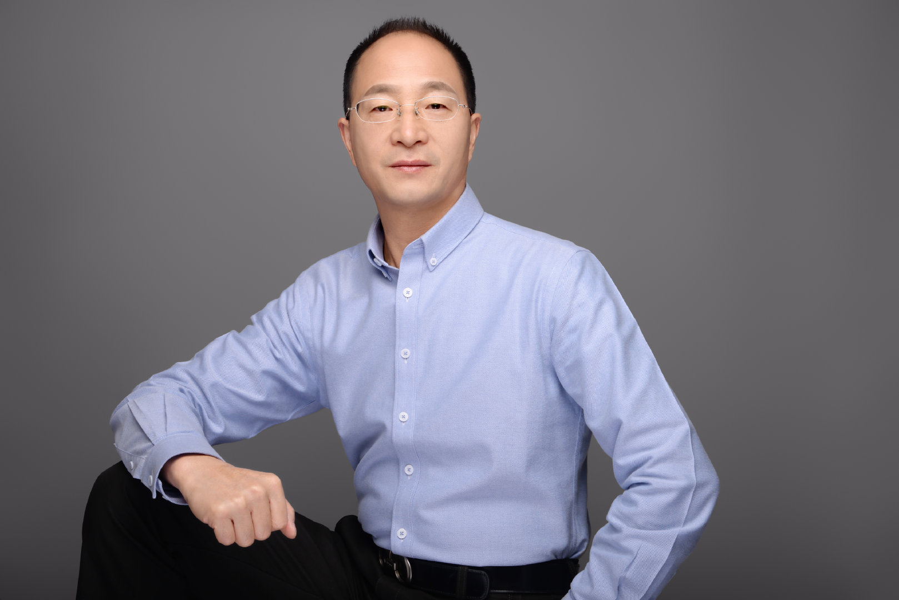

反脆弱的实例。//@楼仲平:“双童”小客户原则：为什么拒绝太大的客户？专注于“小客户”才能有主动！差异化竞争的本质是不过度依赖“大客户”！@双童吸管:2003年，我们发现“双童”生产的产品90%出口，而且集中掌握在五家客户手上！这时我们意识到了危险。所以，@双童吸管 三年里把大客户全砍掉，到现在有13000多家小客户，有些客户可能三年拿一次货，但我们恰恰认为这样的客户是有价值的。因为客户多，不会因某一部分客户的流动而让企业产生影响。@楼仲平 

 //@楼仲平:“双童”小客户原则：为什么拒绝太大的客户？专注于“小客户”才能有主动！差异化竞争的本质是不过度依赖“大客户”！
//@楼仲平:“双童”小客户原则：为什么拒绝太大的客户？专注于“小客户”才能有主动！差异化竞争的本质是不过度依赖“大客户”！